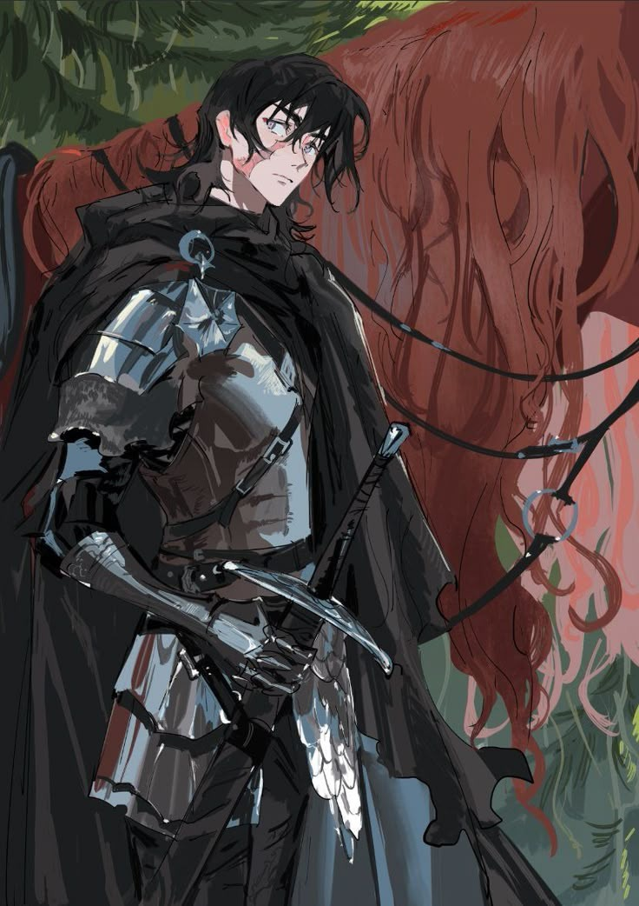

| Muken Moto | The Tokenless Kōkan, the red line of the Moto as of the ridge above the Aerne mouth the Lore and the look stand at the king’s tower at Kharven-Seat, spring, six months after the Great War of the North |
| Epithet | The Tokenless the Marrow traders’ word for a sergeant with no house seal to his name, said to his face by Ulf Stark and spat by Kagenori Tenrai and Karogane; it has been wrong since the Foot, and the north will not give it up the Ashen Blade, in the taverns under the Seat |
| Concept | He can see where anything is ready to break, and he can finish the job. |
| Stat line | Stage XIII Principality · Archmaster (Starred) Level 495 · Refined · Class offered at Glory, not yet named Body XIII Mastered, V · Fate XII Walked 35%, IV · Spirit Studied 15%, II · Lenses: home + 2 |
| Combat grammar | Verdict |
| Aura | slate gray shot through with fine gold seams, like old glaze crazed over a kiln-dark pot; when he pushes, the seams brighten to forge-gold and the gray goes nearly black |
| How he moves | Yusif’s stick taught him to stop thinking and let the feet do it, so his body is out of the way before he has decided. Tsugigane rides edge up through the sash at the left hip and comes out the cutter’s way, the blade’s back riding the scabbard’s lip so the edge never touches wood. |
| Stack | sustainable at his means, Vitality 301, Ardency 325, Resilience 371, Tempering 333 and Dominion 397, Gnosis 269 and Dexterity 177.5, Harmonics 121; and at Perception 1,200, Penetration 1,200, Fortitude 1,100 and Anchoring 1,050, Dominion Fate 950 cap two steps on the hidden scale over the sustainable figure layers: FURE (HIBI) when called, the sworn word when spoken, DIDN’T CRACK (SHIGOTO NO KABE) while he holds a load |
| Bonded weapon | Tsugigane |
| Kit | a harness of red lamellar so dark it reads black, white silk lacing, a bare iron helmet with no crest, and the piece people talk about first: Tsugigane, a Legendary sword with seven surgeon’s needles folded into it and not one speck of gold on it |
| Voice | ”There. See? Didn’t crack.” speaker type: a salt-gallery cutter turned sergeant turned king, who learned to talk from a quiet man with a gray beard and to swear from free-company soldiers |
| Next gate | Stage XIV, Zenith Catalyst: his accumulated doctrine becomes recognizable to a Hollow Throne, the empty seat of a dead Archon, and the Throne resonates with him; recognition, not a breakthrough, and money buys only the attempt holds at Level 420, which his 495 already passes: only the Catalyst is wanting, and past Level 500 without it he would come into Residual Strain |
I. Identity
| Field | Value |
|---|---|
| Full Name | Muken Moto, First of his name |
| Pronunciation | MOO-ken MOH-toh |
| Alias / Title | The Tokenless King of the North Rightful King of the Clans and Leader of the Banner Houses True Heir of the North the Ashen Blade, in the taverns under the Seat |
Also Known As
| Name | Who says it |
|---|---|
| Muken of the Lanternless | on the Halcrest contract rolls |
| Sarge | Rob and Mark Stark |
| lad | Ulf Stark and Wystan Greymane |
| Kasane’s | Yusif Stark, who never once called him Gimbzo’s boy |
| the White Wolf | in Naiser Yukari’s seeing |
| the boy on the ice | the Keld |
| Gimbzo’s get and the butcher’s boy | Kagenori Tenrai |
| a clerk’s error | Karogane |
| the crack-reader and the red line’s last | Faisal |
| Field | Value |
|---|---|
| Race / Lineage | Human. Kōkan, the red line of the Moto, the line of the red chair, through his father; Byakuya, the white line, through his mother; kin to the Yukari through the name his mother took at her Telling |
| Age | Thirty-four |
| Realm / Faction | Kharven-Seat and the north: the seven Moto lines and the six Banner Houses under one crown, ratified in the Hall of Verdicts |
| School and sect rank | Yusif Stark’s stick on a salt-gallery floor from the age of eight; the Lanternless free company, sergeant at sixteen, the youngest it ever had; the Works of Hataraki from Faisal in the Plane of Fate the active leader of the Kōkan, which is now a line of one |
Renown
| Among | What they say of him |
|---|---|
| the public | the boy who came home from the ice with nobody, and a king the taverns sing about with the numbers always too big |
| the army | the Stark and Greymane foot knelt to him by the woodpile without being told to, and would again |
| the sects | the Moto Hall of Verdicts sat seven chairs under him for the first time in three hundred years and does not yet know what to do about it |
| the guilds | Hallenfeld holds his paper and would like to see it collected |
| epithet | the Tokenless |
| Field | Value |
|---|---|
| Catalyst Event | On the stair of Kharven’s Foot, under Shigure Tenrai’s sword, when the heat behind his left eye became a brand and he saw where every stone in the keep was carrying its weight, and broke the step she stood on |
| Refusal | He will not be his father: no levy on Zettari land, no column through a burning village on his order, no line of his own blood put down a cellar because it told him no |
| Conviction | A thing that is already dead may be ended, and only that; everything still living is owed a chance to close. He learned it from his sister, and it costs him every time it would be easier to break the whole wall |
| Arc kind | Positive, under strain: the boy who only knew how to break learning what he is for once there is nothing left to break |
II. Soul Architecture
| Field | Value | Note |
|---|---|---|
| Level | 495 | it holds Principality (401) and would hold Zenith (420), and no Residual Strain builds in him short of 500 |
| Temperance Stage | XIII, Principality · Archmaster | — |
| Path | Body XIII Mastered · Fate XII Walked 35% · Spirit Studied 15% | Body leads and carries the sword-arm and the frame that takes a load, the path weight takes through a thing and the place it leaves: a Body walker is made of the thing a door opens into |
| Mastery | Body V, Radiant: the lead, read from Level under Principality’s ceiling · Fate IV, Knotwright: Walked, a rung behind the lead, the Kōkan grip on the Works lifting its ceiling to the Stage’s; the hall where the table was cleared saw him stand at Weaver, and that was an overreach, the night he reached past his rung, once, at a price; the ridge’s great workings ran on Bara’s credit and borrowed sap, not on his own rung · Spirit II, Answerer: Studied, two rungs behind the lead and capped there | — |
| Yield (η) | 1.00 through the Shell, at Body V · 0.75 to 0.85 for a working authored in the Core, at Spirit II · 0.97 for a pull, at Fate IV, Knotwright | — |
| Soul Crystal | Starred, the Archmaster’s look | — |
| Crystal State | Refined. The grief and the overgrowth of the spring were gone from it by the river, “neither now” by the soul’s own word. The bill on the ridge took the reserve to the floor and the place under the floor; what that leaves in the Crystal is not yet read | — |
| Class | offered at Glory, not yet named | — |
| Fate Art | Hametsu no Gō, the Work of Ruins grip: Kōkan blood, taught by Faisal, with five more Works held by rote Fate IV no Moto has ever found the pull light, and neither does he | — |
| Blessings and curses | Bara, the First Epoch ”I’ll give you the knowledge of my Ultimate Techniques,” with a touch on the forehead in the Plane of Fate, and “Some will say I should have blessed you” | — |
III. Wellspring Harmonizations
| Wellspring | Folk name | Depth | Got from | What it bends in him |
|---|---|---|---|---|
| Fractura | the Crack | working | — | reads where a made thing, a body or a line of men is tired, and where it will give |
| Petralon | the Foundation Stone | shallow | — | carries a load down through bone and stance into the ground instead of letting it stop in him |
| Judicium | the Scale | shallow, waking | — | ranks what Fractura shows him, worst flaw first, and marks the men who mean him harm |
IV. Primary Stats
| Primary | Total | Mean |
|---|---|---|
| Vitality | 2,410 | 301.25 |
| Ardency | 2,600 | 325 |
| Gnosis | 2,150 | 268.75 |
| Dexterity | 1,420 | 177.5 |
| Harmonics | 965 | 120.625 |
| Resilience | 2,970 | 371.25 |
| Tempering | 2,665 | 333.125 |
| Dominion (seven, Throne apart) | 2,780 | 397.14 |
| Throne | 10, opened in the red chair | · |
V. Sub-Stats
| Primary | ||||||||
|---|---|---|---|---|---|---|---|---|
| Vitality | Fortitude 1,100 | Absorption 200 | Constitution 400 | Hemostasis 100 | Regeneration 150 | Filtration 40 | Tolerance 220 | Threshold 200 |
| Ardency | Flux 250 | Alacrity 60 | Depth 170 | Penetration 1,200 | Compression 400 | Cascade 120 | Overchannel 250 | Density 150 |
| Gnosis | Perception 1,200 | Acuity 120 | Forecast 100 | Fluency 40 | Retention 80 | Analysis 350 | Cognition 60 | Vigilance 200 |
| Dexterity | Celerity 220 | Reflex 350 | Finesse 200 | Economy 220 | Evasion 80 | Grapple 160 | Feint 40 | Sequence 150 |
| Harmonics | Attunement 180 | Projection 150 | Breadth 95 | Stability 220 | Empathy 80 | Synergy 60 | Axis 150 | Suppression 30 |
| Resilience | Integrity 250 | Ward 100 | Persistence 400 | Anchoring 1,050 | Fortification 220 | Hardening 150 | Oath 450 | Continuity 350 |
| Tempering | Clarity 255 | Overflow 250 | Maturity 400 | Coherence 460 | Yield 450 | Ceiling 250 | Capacity 350 | Longevity 250 |
| Dominion | Radius 180 | Sovereignty 400 | Sense 200 | Gravity 350 | Pressure 300 | Command 400 | Fate 950 | Throne 10 |
VI. Force of Hand
| Measure | Figure | Feat | Carried by | Note |
|---|---|---|---|---|
| Strike Force | Penetration 1,200 | — | Penetration 1,200 | the Measurewrights reckon it at 5 PN to 5 EN and 4.184 ZJ to 1.24 × 10²⁹ J on the point |
| Lifting | Fortitude 1,100, Constitution 400 | 100 to 500 billion tonnes | the mean of Fortitude 1,100 and Constitution 400 (750) | — |
| Travel speed | Celerity 220 | 514.5 to 1,715 m/s | Celerity 220 | — |
| Reaction | Reflex 350 | 0.2 to 1 ms | Reflex 350 | — |
| Durability | Fortitude 1,100 | — | Fortitude 1,100 in the body | the Measurewrights reckon it at 2.09 ZJ to 6.2 × 10²⁸ J |
VII. Aether Flow
| Measure | Figure | Note |
|---|---|---|
| EU Reserve | 5,782,824,000 EU, 5.78 × 10⁹ | — |
| Flux Density | 2.00 × 10⁸ EU/g | — |
| AU/s | 2.00 × 10⁸ | — |
| Recovery | about ten percent a minute at rest, some 5.78 × 10⁸ EU a minute | empty to full in ten minutes and out of Starvation in one, slower when he has not slept, and he does not sleep |
| From full | empties in 28.91 seconds at full output; Essence Starvation at 26.02 seconds, at the floor of 5.78 × 10⁸ EU delivered at full output, by the Measurewrights’ reckoning, 2.00 × 10⁸ MW, with no loss at the Shell that can be measured | — |
Spending tells
| Reserve left | What shows |
|---|---|
| half | the Kharven breath comes short and the gold in his aura dims to brass |
| a quarter | a tremor in the sword hand, and the heat behind the eye turns to ache |
| a tenth | the seams in his aura flicker and the Eye goes blind for a breath at a time |
| past that | cold so deep his teeth chatter, which is how he has always known he was empty |
VIII. Traits
Full accounts: Muken Moto — Abilities
Every Trait reads at his lead Mastery, Body V.
| Trait | Kind | Source | Path and Form | Gates | What it does | Limit | Tell | Cost | Counter | Numbers |
|---|---|---|---|---|---|---|---|---|---|---|
| SEAM-SIGHT | Primary | Lived | Body, through Fractura · Form Read, by the eye his blood gave him | none on the card | Always on. Gold lines over the world showing where a wall, a knee or a line of men is ready to give, his own worst flaw first. | It only reads load and fault; a thing truly whole, freshly forged or simply soft gives him nothing, and it shows him where a man will break, never what the man means. It can be blinded: when Fate collects, the Eye fills with blood and sees nothing. | The heat and the widening gold seam in his left iris. | Nothing he notices at rest; a slow heat behind the left eye under strain. | Offer nothing flawed, or move faster than a fifty-pace read can follow. | range: about fifty paces · priced by: Perception 1,200 |
| THE UNWRITTEN NAME | Inherited | Inherited | — | — | No book in the world has his name in it, so nothing that looks a man up by his name can find him | It only hides him from things that read by name and lineage; plain eyes, a blade and a good guess see him as well as anyone. | tokens go dead in his hand | Nothing in Essence, and he cannot turn it off; no token will ever hum for him and no house seal will bind under his name until the Kōkan mark is set on it by hand. | Fight him with your eyes open and your fate-sight shut. | None; it does not switch off and does not grow. |
| DEBT RECOGNITION | Secondary | Lived | Lands through the Attraction Layer, read by Judicium · Form Read | none on the card | He feels who in the room means him harm and who wants something from him, worst first, and his head turns before they move. | It has a reach and no more, and a man waiting outside it is outside the Eye as well. | His head turning toward a threat a moment before the threat moves. | A little of his reserve while it runs hot, almost nothing when he is calm. | Want nothing and stand very still, or wait outside sixty paces. | Range about sixty paces. |
| STONES ON A CAIRN | Passive | Lived | Lands through the Attraction Layer, on his voice · Form Claim, at its smallest | none on the card | When he means it his voice comes low and slow, and cups, lamps and people stop to hear it | It rides his voice and his conviction; it carries in a hall and dies in a battle’s noise, and it does nothing when he does not mean what he says. | The lamps. Where there are no lamps the room still answers: frost on the walls trembles all together when he draws breath to speak, and the pillars hum back. | Nothing. | Noise, and distance. | None; it carries as far as a hall carries a low voice. · Resonance Fatigue: the Eye has run hot since the war and will not rest · Rigidity: DEBT RECOGNITION hardening into reading every face as an account · Shear Break condition: breaking the oath he swore by his honor that no Moto marches on Zettari land under his rule |
IX. Skills and Abilities
Skills
| Skill | Cues / mechanics | Learned where | Priced by (Sub-Stats) | Rank | Mark |
|---|---|---|---|---|---|
| Salt cutting | read the face for the soft seam, set the pick, carry a full load up four galleries | the Orrel Cuttings under Halcrest, from childhood | Perception, Fortitude | Archmaster | Mastered |
| Free-company swordwork | Yusif’s stick: stop thinking, let the feet do it; edge, weight and the long clean line of the cut | a gallery floor, then the Lanternless | Penetration, Reflex | Master | Drilled |
| Dirty fighting | the kick off a locked arm, the head-butt, the pommel as a hammer, whatever is in reach | the Thresh contracts and the Veyrath ditch | Grapple, Reflex | Adept | Drilled |
| Ground and route reading | the closed road nobody watches, the wall’s old seam, the ford a column can take | the Lanternless, Ulf Stark | Perception, Forecast | Master | Drilled |
| The Kharven breath | in through the nose until the ribs ache, out through the mouth until nothing is left; every Work and the release start on it | the galleries, where breath is counted; Faisal made it a tool | Constitution, Tolerance | Expert | Drilled |
| Rope and the long splice | unlay both ends, weave strand into strand, trust a splice and never a knot; knows a rope at the break by its fray | the Orrel Cuttings | Perception, Finesse | Master | Drilled |
| Holding a hall | sit, let them say all of it, then speak once | Godfrey Greymane | Command, Pressure | Expert | Held |
Techniques
| Technique | Kind | Mark | Source | Path and Form | Gates | What it does | Limit | Tell | Cost | Counter | Numbers |
|---|---|---|---|---|---|---|---|---|---|---|---|
| THE SPLINTERED WORK | Signature | — | — | — | — | He can see where anything is ready to break, and he can finish the job | The glyph’s limit is the fault itself: he can work only at a seam that is already there, and a whole thing gives him nothing to see and nothing to hold. | — | His Eye won’t switch off at the supper table, and he sees where everyone he loves will break; each time he forces it the gold seam widens a thread and does not close. | Bring him nothing already flawed; damp the note with cold, noise or a flat hand; take the ground away from DIDN’T CRACK; or reach him before the breath is out. | — |
| SPLIT AND RESOLVE | Move of THE SPLINTERED WORK | — | — | — | — | Two words on one short falling cut: every crack in the thing runs at once, and every piece goes to its proper end. The cut line is still called Tsugigane’s Resolve. | — | — | — | — | — |
| SHINGAN | Bloodline Faculty, Moto | Drilled | Inherited | Body, through Fractura · Form Read | the Moto blood; the Kōkan gold in it opens the road to the Kamigan | the eye reads where everything is carrying its weight | It resolves load and fault in matter, bodies and formations; it cannot resolve intent, a lie, or anything with no structure. | the gold seam | Heat behind the eye while it is held; forced past its depth, the seam widens by a thread and never closes. Figures: held open: 0.13 percent of reserve a second, a little under 8 percent a minute; about 7.52 × 10⁶ EU a second | Give it nothing flawed, or nothing it can see. | held open: 0.13 percent of reserve a second, a little under 8 percent a minute; about 7.52 × 10⁶ EU a second; some eleven and a half minutes from full to Starvation |
| DEAD NOTE! (破滅の業 · Hametsu no Gō) | Bloodline Art, Hataraki | Drilled | Taught | Fate where the grip takes hold, at Fate IV, with the breaking done by Body through Fractura · Form Pull | the Kōkan grip, then Dominion Fate against the target’s Persistence and Continuity; his Dominion Fate stands at 950, which a dead thing cannot meet; against the living it is still held by his oath to crack nothing that is not already dead | He finds the sour note in anything already rotten, holds it in one long breath, and it falls apart along its own fault and nowhere else. | His oath and its own law: held to the dead crack only, it leaves every sound stone untouched, and he has sworn by his honor to crack nothing that is not already dead; driven by rage, it ends what was rotten and then what was near the rot, and it does not stop. | The breath, in through the nose until the ribs ache and out through the mouth until nothing is left. | A small share of reserve for a thing that is dead and near; a fifth and more for a thing held at a distance. Figures: a rope’s worth of rot: about 2 percent of reserve, some 1.16 × 10⁸ EU; the ward-stone over the Seat’s gatehouse, held from half a mile: a fifth of reserve, about 1.16 × 10⁹ EU | Break the note with noise, damping, cold or a hand flat on the struck thing, or bring him nothing already dead. | a rope’s worth of rot: about 2 percent of reserve; some 1.16 × 10⁸ EU, and some ten million EU a second while held |
| THE WAY SHE DID IT (純潔の業 · Junketsu no Gō) | Bloodline Art, Hataraki | Held | Taught | Fate where the grip takes hold, at Fate IV, with the closing done by the living flesh itself · Form Pull | the Kōkan grip, and the patient’s own willingness | a flat palm, no words, and he listens to a wound’s living edges until they close | Old harm the body has already set crooked, the wrist from the stamping floor, the shin from the Veyrath ditch, his knuckles, it will not touch, because their proper shape is now the crooked one. It works only on what is living and willing; Faisal forbade him to do it to a man who has not asked. | The flat palm and the silence. | A share of reserve and a quiet minute a wound. Figures: a fresh wound: about 5 percent of reserve, some 2.89 × 10⁸ EU | Hurt him faster than he can listen. | A fresh wound: about 5 percent of reserve and a quiet minute, some 2.89 × 10⁸ EU. |
| OPEN HAND (精霊の業 · Seirei no Gō) | Bloodline Art, Hataraki | Held | Taught | Fate where the grip takes hold, at Fate IV, on the crossing between living and dead · Form Pull | the Kōkan grip; a thread that is still there to hold | he feels a soul’s thread and holds it, or lets it go | It cannot call a thread back that has gone, nor keep one that will not stay. | His closed hand. | Little in Essence, and a great deal otherwise. | Distance and time. | — |
| JIKAN NO SHIGOTO | Bloodline Art, Hataraki | Held | Taught | Fate where the grip takes hold, at Fate IV · Form Pull, used only to follow | the Kōkan grip | follows a cause back a knot at a time | It shows causes; it changes none, and a long thread takes long hours. | — | A sliver of reserve a knot, and a heavy head. Figures: about 1 percent of reserve a knot, some 5.78 × 10⁷ EU | A thread too tangled to follow before the moment passes, or a knot where the cause has been hidden. | Note: a quiet Work · About 1 percent of reserve a knot, some 5.78 × 10⁷ EU. |
| CHISHIKI NO SHIGOTO | Bloodline Art, Hataraki | Held | Taught | Fate where the grip takes hold, at Fate IV · Form Pull, used only to hear | the Kōkan grip | hears what a man hums under his face | It reveals and does not act, and it will tell him Kagenori Tenrai is grieving without telling him what to do about it. | His head tipping as if listening. | A sliver of reserve a reading. Figures: about 1 percent of reserve a reading, some 5.78 × 10⁷ EU | A man who has gone quiet inside. | Note: a quiet Work · About 1 percent of reserve a reading, some 5.78 × 10⁷ EU. |
| DIDN’T CRACK! (仕事の壁 · Shigoto no Kabe) | Bloodline Art, Hataraki, and its Application | Held, both | Taught | Fate where the grip takes hold, at Fate IV, with the carrying done by Body through Petralon · Form Pull for the Work, Shape for the wall | the Kōkan grip, and ground under him that will take the load | He plants both feet in front of whatever is coming down on everyone behind him, and the blow goes through his bones into the ground. | It needs ground under him; airborne, braced on ice or on a floor that will not take the load, it has nowhere to send the weight. The wall holds against a load the ground can take; against a load that comes from every side at once, or from below, it has no path. A floor that holds only what its owner lets it hold gives the load nowhere to go, and every blow stops in his body. | he kneels, or plants both feet and stops moving | A share of reserve to set and a bleed to hold, and it cracks his bones a little every time, which shows as hairline cracks down both forearms from wrist to elbow. Whatever he sends down, the ground has to keep: a load sent into the ground is still a load, and enough of them open a hollow under the stone until the hill goes out from under him. Figures: Balance: about 3 percent of reserve to open, some 1.73 × 10⁸ EU; the wall: about 4 percent of reserve to set, some 2.31 × 10⁸ EU, and about 1.01 × 10⁷ EU a second to hold | Take the ground out from under him, make him move, or hit him from where the ground is not. | Balance: about 3 percent of reserve to open; some 1.73 × 10⁸ EU, and a slow bleed while held · the wall: about 4 percent of reserve to set; some 2.31 × 10⁸ EU, and about 1.01 × 10⁷ EU a second to hold; some eight and a half minutes from full |
| THE WHOLE HAND (全体性の働き · Zentai-sei no Hataraki) | Bloodline Art, Hataraki; the Kōkan’s own | Held | Inherited; Faisal withheld it and never taught it, and it came by itself | Fate, on all six grips at once, far above what Fate IV can pay for · Form Pull | the Kōkan blood and the other six Works in hand; Faisal’s condition, which he met | All six grips closed at once on one thread, so the thing is read whole and nothing in it is left to guess. | What it reads: it follows cause down into consequence, so a thing whose arriving has been cut loose from its going gives the hand nothing to close on, and he does not see it come. | both eyes crazed gold and bleeding, six notes in the teeth | All six Works are paid at once, in blood from both eyes and the nose and bells that go from ringing to aching; with the reserve short it takes his own substance, which nothing refills. | Put the result ahead of its cause, break his hold while both hands are full, or be so whole that the reading finds nothing to use. | in EU: none · past the floor of an empty reserve: it draws from his substance · called: “a great deal more than he could spare and less than he had feared” |
| UNLIMITED WORKS OF FATE | Legendary art, Bara’s own | — | Taught, by Bara, and by Bara’s word no blessing | — | — | every one of the first god’s jobs at once, on credit, and the bill always comes | — | he names the art aloud before every move | It runs on credit entered against his name in Fate, the gold seam in his eye tears a thread wider with every share, and the bill has come once already and taken the Eye. | Owe nothing and carry no old cut; cut the roots above the ground or take the ground away; break his hold before the mends set; and a thing with nothing tied gives CLEAVE no knot to part. | Note: he calls it “Unlimited Fate Works” · Every use runs on the gift or on borrowed sap, against a reserve of 5.78 × 10⁹ EU. · Forms: FUSION, Bind; SABA NO ROSA, Pull · out of the body, paid by the gift: he comes back vomiting blood, his aura’s gold dim as brass, his teeth chattering · a crossing and FUSION: down to about 40 percent of reserve; some 2.3 × 10⁹ EU left; blood from eyes and nose and the left knee loose · the roots refill it: to about 95 percent, on account; some 5.49 × 10⁹ EU · WEAVE: costs more than FUSION · NADI at five hundred seams: past the half and past the quarter in one stroke with nothing refilling; under 1.4 × 10⁹ EU left · when Fate collects: everything below a quarter, the floor under it and the place under the floor; blood from both eyes, the nose and the ears, his hearing muffled and the Eye blind · SABA NO ROSA, by its own page: half a percent of full reserve a rose; some 2.9 × 10⁷ EU |
| CLEAVE | Move of UNLIMITED WORKS OF FATE | — | — | — | — | A cut with no force in it at all, falling on the line of the last cut as if the world only had to be reminded. With Tsugigane behind it the edge does not stop at the meat: it goes on through everything a thing is, along one line, and leaves a seam of no color that takes whatever touches it out of the world. He says it low; the last of a set he shouts. | — | — | — | — | — |
| NADI | Move of UNLIMITED WORKS OF FATE | — | — | — | — | One committed stroke allowed to run down every line it might have taken: ten seams, twenty, five hundred, and then all of them closed back into the one. The old readers’ word for a channel. | — | — | — | — | — |
| FIRST ACT: INFINITE CLEAVE | Move of UNLIMITED WORKS OF FATE | — | — | — | — | The space round him curves. It cuts along every road you could take, so every step away from him lands nearer. | — | — | — | — | — |
| INFINITE REACH | Move of UNLIMITED WORKS OF FATE | — | — | — | — | The world folds toward one target like cloth toward a pin, and a gold chisel no longer than a forearm falls down every crack in every way it could stand. | — | — | — | — | — |
| SABA NO ROSA | Move of UNLIMITED WORKS OF FATE | — | — | — | — | (the Reckoning of Roses). The sky grows roots. Each rose is a deposit and each thorn an unpaid debt, and you are what they are collecting on. The same roots carry a load into the ground, drink a fire that eats anything, and fill him back up like sap in spring. | — | — | half a percent of full reserve a rose, some 2.9 × 10⁷ EU | — | — |
| CLEANSE | Move of UNLIMITED WORKS OF FATE | — | — | — | — | The roots go white, and whatever has been pressed onto your soul comes away, like ink in a lake. | — | — | — | — | — |
| FUSION | Move of UNLIMITED WORKS OF FATE | — | — | — | — | Gold thread off his fingers splices every broken strand of a person end to end, so the mend is stronger than the rope ever was, wakes the threads they never knew they had, and ties body back to spirit. | — | — | — | — | — |
| WEAVE, then RESOLVE | Move of UNLIMITED WORKS OF FATE | — | — | — | — | Everything falling is knotted over and under its neighbor into a net that spreads the load, and the second word pulls the net hard into a floor, a wall and a stair. | — | — | — | — | — |
| — | — | — | — |
Vows
| Vow | Sworn to or before | Binds and lifts | Stands |
|---|---|---|---|
| under his rule no Moto marches on Zettari land, nor anyone else’s: no levy, no column, no tax-cart | by his honor | — | — |
| to crack nothing at the Seat that was not already dead, and to close what he could, the way she would have | by his honor, before Faisal | — | kept |
| to stay worth following | to the Keld, the condition Aksel set | — | — |
| to fight Dougou of the Zettari when the snow goes, no armies | by his honor | — | — |
| to face every house his blood wronged himself, one at a time, and answer for it, and not hide behind a chair | by his honor, before the Sin of Wrath on the Kessen road | — | paid at once in the left eye, the seam torn and a line of blood down his cheek |
| ”All those who raise their hands up against the ones I love will die” | sworn aloud on the black floor | — | the biggest word he has sworn, and when it set, the Ruins note rose over the other six and his eyes went the color of old blood for one beat, which he did not notice |
| ”You will have her back.” | to Amelia, on his knees on the black floor of the great hall at Kharven-Seat the night Mizuyi was taken, in the hearing of the Yukari with the leaf alight, so it went into Naiser Yukari’s book: “witnessed in the Skein” | binds him until it is done; it presses on him every day “the way a debt presses, until it is paid or it breaks him”, like a prop driven home under a gallery roof; he took the weight on and did not take it back | open. It stands face to face with the first vow on this list, no levy, no column, no tax-cart, since no girl comes back from the foot of Cozbi Mahuo’s steps without men going down the Kessen road; Amelia saw the clash and held her tongue, Sodoku put the first vow to Sonzai at the west gate, and nobody has ruled between them |
Releases
| Release | Kind | Mark | Source | Path and Form | Gates | What it does | Limit | Tell | Cost | Counter | Numbers |
|---|---|---|---|---|---|---|---|---|---|---|---|
| FURE! (ひび · Hibi, First Release, “the Hairline”) | First Release | — | — | Body, through Fractura · Form Strike | Stage IV, a First Release; a blade to carry the note | The blade rings at the note of one thing in front of him until its worst crack runs on its own. | It needs a flaw; something whole gives it nothing. A blade held on a note too long finds its own. | The Kharven breath before it. | A heavy share of reserve to wake and a fast drain to hold, shown as heat behind the eyes and a tremor in the sword hand that grows with each new note he tunes to. Figures: about 8 percent of reserve to wake, some 4.63 × 10⁸ EU; about 4.05 × 10⁷ EU a second to hold | Kill the note with cold, padding or a hand flat on the struck steel; change what he must read before he can hold one pitch; or bring nothing flawed. | folk name: the Crack · Note: the word a blade of his house answers to while it sleeps is Asami · to hold: about 4.05 × 10⁷ EU a second; from full to Starvation about 1 minute 58 seconds |
| EVERY ROPE IN THE CITY (ひび割れ · Hibiware, Second Release, “the Crazing”; woken, not called) | Second Release, woken, not called | woken, not called | — | Body, through Fractura · Form Shape, a field of the same ring | Stage VII, open, since he stands at Stage XIII; Faisal’s condition, which gives the move its name | The blade rings at everything at once. It has happened once. Faisal has forbidden it. | — | — | A Crystal fractured along its grief. | He is the counter: his oath, and Faisal’s word. From outside, the same as FURE, and distance from everything he loves. | None; it has never been called. Woken once, in the yard at the Foot. |
X. Spirit Axes
| Person | Bond | Axis weight | What flows across it | Note |
|---|---|---|---|---|
| Yukazuri Moto | his sister, dead | 40, severed | the first bowl one way and an earful the other | severed at her death and released in the Plane of Fate; what is left is a gallery fire someone keeps at her cairn |
| Lorn Stark | the Sword | 20 | — | forged on the Seat road, with both of Lorn’s arms round him while he fought to go after her |
| Godfrey Greymane | the Shield, his Hand | 20 | — | forged at the Foot and on the ice, where Godfrey carried her home in his cloak |
| Amelia Greymane | newly met as the four worlds parted; his wife and queen twenty years after | forming as the four worlds parted; not read since | in the hall past the second bell he leaned and the whole weight of him came down onto her, and she took it through her knees into the stone | one afternoon in the tower, two people who had not cried in months crying together, and a spar agreed in the yard; married that year, and twenty years married now |
| Mizuyi Moto | his daughter, taken | not read | — | taken by the dark off her cushion at his right hand at her betrothal supper; he did not say her name until past the second bell, and then wept |
| Sodoku Moto | his son, the crown prince | not read | a hand on the head, from senior to junior, as the house does | knelt by him on the hall floor and took the night’s backlash so the king could see to the queen; Muken laid his right hand on his head and said nothing |
XI. Resistances
| Against | Resistance | Carried by | Note |
|---|---|---|---|
| Fate-sight, token-reads and name-workings | near-immune | THE UNWRITTEN NAME | — |
| Repeated blunt load | very good while grounded | Anchoring 1,050 and Balance | — |
| Cold | good | Tolerance 220 and the Cuttings | — |
| Mind-work and soul-work | poor for his Stage | Ward 100 and Cognition 60 | held down by Spirit gates he has never opened |
| Ranged and airborne pressure | poor | — | everything he has wants the ground |
| Grief | none whatever | — | — |
XII. Physical Description
| Feature | Description |
|---|---|
| Twenty years on | The rows below this one give him as the four worlds parted, except the eyes. He is the biggest man in his own yard, a full head over Godfrey, his shoulders filling the arch of a door and his forearms, sleeves shoved back, as thick as a guardsman’s calf. Twenty years of peace have put weight on him: he has grown heavy through the middle, thick as an old bear in autumn, with the muscle all still there under it like a boulder under snow, and the front of his coat sits tighter than its tailor planned. He is plainly no longer young. There is iron all through his beard, the lines beside his eyes are cut deep by weather and deeper by laughing, and across his face run two old pale seams where his sister sewed him shut when they were children, which stand out white in the cold. His hair is tied back. He wears the field coat, heavy and dark with iron thread in its seams and a wide fur collar, on mornings he was asked to wear the brocade. |
| Build | As the four worlds parted he was tall and long in the arm, built lean and hard rather than broad, with the narrow waist and the heavy forearms of someone who swung a pick before he swung a blade. |
| Hair | His hair is black, thick and wavy, cut ragged to the jaw and the nape and falling forward over his brow and into his eyes, and he does not comb it; he ties it back with a strip of leather when he works and leaves it loose when he does not. |
| Skin | His skin is fair, gone pale from the salt galleries and never browned since, roughened at the knuckles and cracked white in the creases the way every hand raised in the Cuttings goes; in the six months since the war it has gone gray under the pallor, and his hands shake when he has not slept. |
| Face | As the four worlds parted his face was fine-boned and younger than anything he had done, with a straight nose and a level mouth that rarely moves. |
| Eyes | His eyes are a plain dark brown, a cutter’s eyes, set under straight black brows, and through the left one runs a single hairline of gold like the mend in a broken bowl, which never quite fades and draws open into a fan of gold when the Eye opens; ring-lines show in both irises when it does. |
| Teeth | The left front tooth is chipped to a corner, and when he smiles, which is rarely, it makes him look about twelve. |
| Marks and scars | A long raised scar runs from the hinge of his jaw up across his left cheek to the corner of his left eye, still red at its edges in the cold, where a goblin-thing’s broken hand opened his cheek on the Vessant road, and a pale nick crosses the bridge of his nose; there is a scar across the back of his right hand, a callus across the base of his right fingers from Yusif’s ash stick, a long pale seam from his left armpit across the ribs where Shigure’s sword went through the mail, and scars on the right forearm and the palm. |
| Court dress | At court he wears a kimono of black silk worked in gold dragons whose coils pour from both shoulders down the sleeves, the unified banner of the seven lines in gold thread down the back, and he wears it open to the waist with the sash loose and crooked because there is no one left in the tower to tell him to close it. |
| Road dress | On the road he goes in black: a long black hooded cloak fastened at the throat with a plain iron ring, plate at the shoulder and down both arms, a brown leather cuirass buckled close over mail, black gauntlets, and a skirt of overlapping steel scales over the thighs, and he leads a big red horse whose mane falls like spilled wine. |
| Field harness | In the field he wears the Samurai of Fate harness, red lacquer so deep it is nearly black, laced in white, with a crestless helmet of bare black iron. |
| How the weapon is worn | Tsugigane rides through his sash at the left hip, edge up. |
Wounds carried
| Where | The wound | What it stops him doing |
|---|---|---|
| Left forearm | both bones crazed by YAKI-IRE’s quench and broken at mid-shaft, open, bone through the skin, with a cherry-red handprint burn round it | set crooked, the arm stays crooked |
| Left knee | kneecap broken and dislocated to the outside | the leg will not bear |
| Ribs | left lower ribs nine to eleven broken by a hook, with a burn over them | — |
| Right hand | fourth and fifth fingers broken and skinned | the hand still holds Tsugigane |
| Face | two upper-left teeth broken at the gum, lip split | — |
| Chest and left eye | burn blisters over the heart; the left eyelid blistered shut and the lashes burned; the gold seam torn wider by his vow on the Kessen road | the Eye still seeing through the lid |
| Carried from earlier | hairline cracks in both forearms from SHIGOTO NO KABE; the left knee first hurt in the crater, before the black floor broke it; facial blisters from ABI | — |
| Where | The wound | What it stops him doing |
|---|---|---|
| Left eye and the Eye | the gold seam torn wide when the bill landed on its fault; both eyes bleeding in a sheet and gone red through iris and white; the seam had widened a thread with every share up the roots and does not close | the Eye blind for now |
| Ears | bleeding from both | hearing muffled |
| Burns | second-degree burns on the hands and forearms; a grid of plate-shaped burns on chest and back through the padding; hair singed at the temples and the nape | — |
| Left shoulder | the muscle over the joint crushed against the bone by a cart-sized slab through three folded plates | the arm numb, coming back, and hanging half-numb at the end |
| Left knee | loose under the cost of FUSION | — |
| Right side of the face | a fresh long cut from the brow through the corner of the eye to the jaw, shut by the Work of Purity without hiding the scar | — |
XIII. Psychology
| Field | Value |
|---|---|
| Core Wound | He was too late. They took his sister off the shore while he was winning the battle, and she came home down the frozen Marrow on a pike, so light he could carry her in one arm |
| Flaw | He knows what he is for when he is angry, a thing for breaking things, and he has run out of things to break; when he cannot break the trouble he breaks himself |
| Desire | To be worth the people who knelt by the woodpile without being told to, and to be loved, if ever, for the man and not the chair |
| Strength | He keeps his word, he stops when a man is beaten, and he will not put a verdict in someone else’s hand |
| Loop | carry it, carry it, carry it, and then it comes out in his sleep and an oak bedframe splits; nine beds before he married, by Godfrey’s telling at any table, four since, five counting the one at Galecross that the innkeeper counted |
| Foil | Gimbzo, the father who struck everything he met as hard as he could; and Amelia Greymane, who is a wall where he is a hammer, and who also has not cried in years |
| Stress Default | quieter and flatter, every word set down like a foot on a bad ledge, until it breaks into a roar |
Voice block
| Field | Value |
|---|---|
| Speaker type | a salt-gallery cutter turned free-company sergeant turned king, who learned to talk from a quiet man with a gray beard and to swear from soldiers |
| Chant tongue | northern Common, with the Kōkan’s old words for the Works and the release; he calls “Fure” in the old tongue because that is what it is called |
| Lying tell | he lies badly and rarely; when money is on the table his right thumb moves once against the table’s edge, and when he is hiding hurt he says something dry at his own expense |
| Notices first | where a thing is carrying its weight, and where it is going to give; then who in the room wants something from him |
| Speech length | a line, often less (“I told him leave it.” “No.”); he lets a hall say all of it and speaks once; a promise comes very low and very plain, “the voice of a sergeant telling a frightened recruit the one true thing he has” |
| Wit | dry and seldom, at his own expense when he is hiding hurt; the corner of the beard moves before anything else does |
| Accent features | northern Common with the salt galleries under it: “I’ll not”, “Nah”, “sis”, free-company swearing; carrying something, every word put down level, “as a man puts down a cup that is too full” |
| House words and sayings | his own, “There. See? Didn’t crack.”; the Moto nurses’ saying he lives by without saying it, “the beads hold the eye” |
| Sentence length | short, plain, flat, northern “I’ll not”; longer and warmer with the few he trusts |
| Contractions | always |
| Pet phrase | ”Sky above” |
| Never says | his father’s name with anything but plainness, or anything to shame a man who has already knelt |
| Stumbles | no; he goes silent instead, three minutes once, and the room waits |
| Stress shift | the gallery voice, flat and separate, then the roar |
| Grief shift | silence; he does not say her name, and when he finally does he weeps |
| Joy shift | the chipped tooth shows and he looks about twelve; a hand laid flat on someone’s head, Yusif’s way |
| How modern | plain and casual; “Nah,” “sis,” and free-company swearing |
| Sample line | ”There. See? Didn’t crack.” |
| Desire, refusal and hinge | wants: to be wanted for himself and not bought, and to hold someone without breaking them will not: be loved for the title, or let anyone near him who has not seen him at his worst what would change his mind: proof, by her own hand in his, that he can hold on without anything cracking |
XIV. Equipment
| Item | What it is | Grade | Rarity | Rung | Bonded |
|---|---|---|---|---|---|
| Tsugigane, joined iron | a single-edged curved sword | A | Legendary | Fieldwinner | yes; it carries HIBI |
| The Samurai of Fate harness | lamellar cuirass | D | Rare | Linepiece | — |
| Yukazuri’s salve tin | dented, the Kōkan mark and an arrow pointing south scratched in its lid with a needle | — | — | — | — |
| Ulf Stark’s wolfhound | enormous, gray, yellow-eyed, female | — | — | — | — |
| His beads, jade and iron | prayer beads worn smooth by his thumb for twenty years; a Moto retainer brings his lord the beads before water, because an Eye opened all the way must be given something for the hands | — | — | — | no; he put them on Sodoku’s belt himself, and Sodoku carries them now |
| The field coat | slate-gray, with gold seams that cooled to their ordinary gold when he settled and went dark and quiet when he knelt and held Amelia; a wide fur collar | — | — | — | — |
XV. Temperance Record
Level log
| Levels | Where they were earned |
|---|---|
| 1 to 60 | the Cuttings and the stamping floor |
| 61 to 100 | the Lanternless, the Thresh contracts, the Veyrath ditch |
| 101 to 128 | the Vessant road, the Foot, the Skeldmere, the Seat |
| 129 to 450 | the months since the Seat, and the ridge |
| 451 to 495 | the twenty years after the four worlds parted |
Stage ledger
| Stage | Name | Catalyst | Bought | The story in a line |
|---|---|---|---|---|
| I | Murmuring | — | — | a warmth that moved into his arms when danger came close, in the galleries |
| II | Welling | first contact with a Wellspring under pressure | — | Fractura on the Vessant road against Big Bertha |
| III | Ascension | the first technique he made himself | — | the wall’s old frost-seam read and the ladders switched at Kharven’s Foot |
| IV | Flourishing | the first true Spirit Axis | — | with his sister, already there and only recognized on the Foot’s stair, where the Shingan woke |
| V | Splintering | surviving contact with a force more than two full ranks above his ceiling | — | Faisal under the Lawbell on the Skeldmere, witnesses none in the world and four hundred Stark riders who saw him kneel and stand again |
XVI. Fracture Log
| Event | Layer | Status | What it left |
|---|---|---|---|
| The shore | Attraction | open | DEBT RECOGNITION, and the Overgrown State |
| The silver room | Core | processed in the Plane of Fate, reopened at night | the crack under his breastbone, banked like a coal under ash; Shizuha struck it as hard as she could and it broke, and it held |
| The cairn | Attraction | processed | STONES ON A CAIRN |
Lore
Full account: Muken Moto — Abilities
Ties
| Person | Who they are to him |
|---|---|
| Yukazuri Moto | sister. She sewed his face shut twice and told him to hold still. Dead at thirteen. |
| Kasane Byakuya | mother, the last Samurai of Fate. “I don’t keep his memory. I keep hers.” |
| Gimbzo Kōkan Moto | father, whom he never knew. A monster, he says, who at least stood in the mud at Shimane himself. |
| Yusif Stark | the man who raised him from four galleries up. |
| Kiyome Byakuya | aunt, who told him, gave him the white house, and built him the red harness. |
| Lorn Stark | the Sword, Captain of his Guard. |
| Godfrey Greymane | the Shield, his Hand, and the one who calls him an idiot. |
| Amelia Greymane | the Grey Wall. |
| Faisal | the Grand Angel who gave him back Fure and taught him six Works. |
| Hayato Amagiri, Tetsugen Akagane | the lords who gave him their land; Tetsugen follows and does not obey. |
| Aksel Keld | broken and spared; the Keld follow him while he stays worth following. |
| Dougou of the Zettari | who killed his father, and whom he will fight when the snow goes. |
| Mizuyi Moto | daughter, fourteen; taken off her cushion at his right hand by the dark at her betrothal supper, and held at the foot of the Sum-gol Post’s nine steps. “You will have her back.” |
| Sodoku Moto | son, the crown prince, thirteen; carries his beads, and took the night’s backlash so his father could kneel with his mother. |
| Sonzai Moto | son, thirteen; swore in the hall to burn Cozbi Mahuo’s capital, and walked out. |
| Tenma Moto | son, twelve. |
| Kimizu Moto | son, ten. |
| Naiser Yukari | the Lord of the Cedars, in whose Skein the promise went home. |
| Old Harald | the Keld elder, a hundred and thirty, who told him at the betrothal table to unite the three houses, break the south and not hold it: “I’ve seen what you did to the Tenrai.” |
Later years
By these years he and Amelia have been married twenty years.
| Field | Value |
|---|---|
| State that night | The Eye open and unable to shut: the gold hairline through the left iris drawn wider than its ordinary width and flickering, two dark lines of blood dried in his beard below it. With his beads on Sodoku’s belt he rested the Eye on grains of rice, one at a time, from the second bell, because a grain is the same all through and gives the Eye nothing to find. “Not one of them’s cracked.” |
| The vow’s weight | It went onto him “like a beam set on a post, and then the weight”, down across the shoulders and the long back, stopping somewhere about the knees; it will be there every day until it is paid or it breaks him. |
| What he knows | He has felt the Entered Word before, at council tables and across a field of parley, and knows it when it takes hold of a thing he has said. The winter Mizuyi was born he told Amelia, lying in the dark, that a fault had opened in her that had not been there the winter before, one bright line running up from the breastbone, and would not tell her its name. |
| Grief | He did not say Mizuyi’s name from the moment the door shut until past the second bell, alone in the hall with Amelia; then he said it and wept, and leaned his whole weight on her. He laid one grain from Mizuyi’s place in Amelia’s ruined palm: “There. See?” and did not finish it. |
| Renown | The songs the lower town made that winter have him sit the hall till dawn with his sword drawn across his knees; he had no sword on him, and he had rice. |